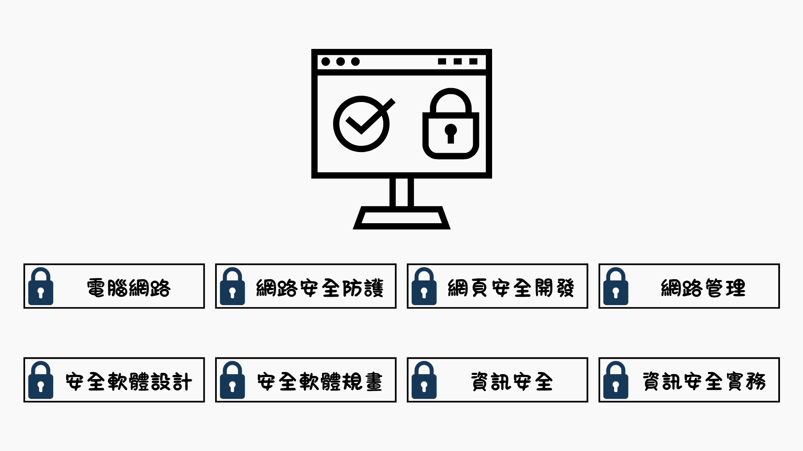
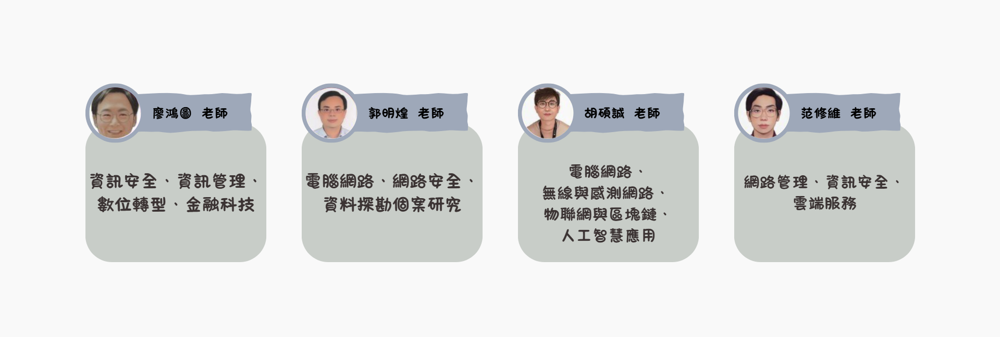

課程介紹
為配合國家政策培育資安學研人才，自112學年度起，教育部提供各大學辦理資安外加名額，鼓勵大學透過申請入學管道，招收具有資安特長的學生。
世新大學資訊管理學系擁有一系列的資訊安全理論與實務課程，包含資訊安全、資訊安全實務、網頁安全實務、網路安全、安全軟體設計等課程。授課教師擁有多張資訊安全專業證照，同時也培養學生取得經濟部工業局IPAS產業人才、資訊安全工程師證書與相關國際證照。
目前就業市場上極度缺乏具有專業知識與實作技能的資安人才，擁有資訊安全專業能力就是就業保證。歡迎對資訊安全有興趣的高中生加入世新資訊管理學系，在經過世新資管的專業培訓後，未來在資安專業領域將擁有無限可能。
課程架構

領航員
